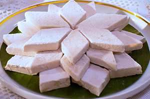
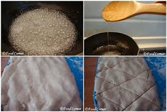

html
Sri Lankan Aluwa
Sri Lankan Aluwa

Ingredients

- 10 cups of rice flour (from soaked 4-5 cups of white raw rice)
- 2 cups of Sugar
- 3 cups of water
- 3-4 cardamoms
- Hand full of cashew nuts
Recipe
- 01. Cook the rice flour on medium heat.
- 02. It is preferable to grind your own rice. If you use processed rice flour, the aluwa will become sticky and have a different flavor.
- 03. Keep a small amount of roasted flour on hand for dusting and coating.
- 04. Boil the sugar and water in a nonstick pan until a thick line forms, then remove from the heat.
- 05. While stirring constantly, add the ground cardamom seeds and chopped cashew nuts.
- 06. This time will allow the syrup to cool slightly and will aid in the preservation of the aluwa's white color.
- 07. Then stir in the roasted flour thoroughly.
- 08. Spread quickly on a tray lined with waxed paper, aiming for a 1 cm thickness.
- 09. Cut into pieces as soon as possible.
- 10. After few minutes separate from the tray and coat with remaining flour.
- 11. This measurement enough for 25-30 aluwa pieces.